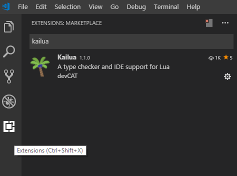
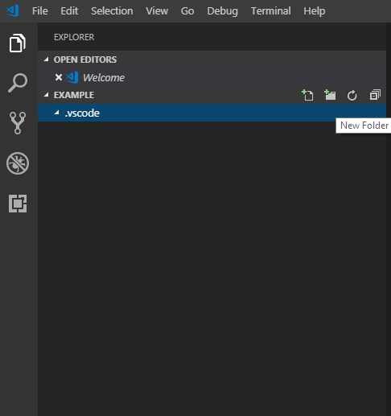

From Start To Scratch
Howdy and welcome, and hi, and hello. This section of the Lua section is devoted to covering as many basics of Lua one can touch on, as they pertain to Total War modding. The assumption is that the tutorial-reader has absolutely no background in coding or programming, so we will begin from the absolute top.
This very first section, before we get into the language itself - we'll be covering the setup and introductory phases. Next section, we'll be writing our first ever actual script, and we'll go on from there, but DO NOT skip this lesson. It's short, sweet, and gives you all the background one needs to go on.
I'll be covering a handful of setups that I find vital for programming in Lua. I'll be showing Notepad++, Visual Studio Code, and VSCode extension that helps debug your scripts. I find all of this to be essential, but you'll be safe with just starting as Notepad++ and returning for the rest later, when you feel more comfortable. For the love of all things holy, don't use Notepad basic.
This tutorial assumes you already have RPFM downloaded. If you don't yet, go grab it.
Notepad++ Setup
First off, [we need to grab Notepad++][https://notepad-plus-plus.org/]. Download it, install it wherever.
Notepad++ is a beautiful text-editing program, and we'll be using it for a couple things. At this point in my existence, I use Notepad++ mainly for global searching through libraries of scripts, it's a great way to quickly read very many scripts at the same time.
While you wait for Notepad++ to finish installing, you should open RPFM, and use the "Open All CA Packs" command (after making sure you have the proper game selected, under Game Selected).
Now, go find a spot to create a script dump folder. You'll need to grab all CA's vanilla scripts and put them somewhere on your PC - I recommend an HDD, if you have two drives! - in order to easily browse through their files. Once you have one created and pinned and you know where it is, go back to RPFM, and go find the main "script" directory. Right-click it and select "Extract", and target the new folder you just made.
And, boom! You now have a script dump. I personally recommend renaming the "script" folder within your script dump folder to something like either the current patch of the game, or the current date. I do that so I can quickly reference different patches and compare versions when new DLC and updates are released.
Lastly, open up Notepad++, and press "File -> Open Folder As Workspace...". Target your renamed "script" folder within the script dump directory, and you'll notice that the directory appears on the left-hand side. If you right-click the main folder over there, and press "Find in Files...", you'll be able to global-search all CA scripts. Incredibly handy for looking at their usage of commands, or to see any references to, say, a lord.
And that's Notepad++! You can make scripts in there as well, using "File -> New" and naming it "whatever_you_want.lua" when saving. Though, I personally prefer using Visual Studio Code for programming in Lua (and it's what I'm typing this tutorial in), and that's where I have my IDE setup. If you're interested in VSCode, continue reading, if not carry on to the Hello World tutorial!
Visual Studio Code Setup
Clearly, one needs Visual Studio Code. [Go get Visual Studio Code][https://code.visualstudio.com/].
You got it? No? Why are you reading this?
Okay, now you're ready? Good.
Visual Studio Code is really nice for a handful of reasons. You can save "code workspace" files, which allow you to easily access several folders or files that you have saved for one project. I can jump really easily between, say, my Return of the Lichemaster code workspace, and my Other Currently Secret Things code workspace, with only a couple clicks. It has a really pretty dark mode, and the syntax highlighting for Lua is gorgeous, in my opinion.
To use VSCode well, I suggest you setup one of these code workspaces, one for each project. To start, create a new folder on your PC, call it whatever you'd like. It's just to run through this example, so I don't really care. In VSCode, use File -> Open Folder, and target that brand new folder.
Within VSCode now, you can create new folders, open extras, and all, and it will be within the same code workspace. I use this constantly to replicate the paths needed in CA packfiles to load scripts - so I'll make a /script folder in all of my workspaces, and I'll replicate my packfile directories within the VSCode workspace.
And that's it, VSCode is really simple to use (for our application atm). However, if we wanted to get more complicated and enable an IDE, keep reading!
Kailua Setup
Within VSCode, click the bottom button on the far-left docker, the one with the title "Extensions". Search for Kailua.

Install it, and enable it once it's finished installing (there will be a button saying "Enable", if it says "Disable" just ignore it.)
Once you're done, open a new folder to work in within VSCode. The first thing you'll do is create a new folder in that folder (reference the image below), and name that folder ".vscode".

Create a new file within the ".vscode" folder, and name that new file "kailua.json". Within that file, input the following exactly:
{
"start_path": ".vscode/entry.lua",
"preload": {
"open": ["lua51"],
"require": [".vscode/ca_types", ".vscode/uimf_types"]
}
}
This file is the injection point for Kailua, so it knows what to do and how to do it. So you're aware for the future - the "start_path" directive tells it "this file leads me to the other files that I have to read and error-check"; the "require" directive tells it "these files give me the definitions to check for errors." The ca_types.lua file defines many CA functions, so Kailua knows to look for two numbers when using the "cm:random_number(max, min)" command. The entry.lua file will be where we target our own files, to get them debugged.
Next up - let's create those three new files! In the same folder (.vscode), create entry.lua, ca_types.lua, and uimf_types.lua.
Now, shoot back to the Tools & Resources page, and pick up the files of those same names, and copy-and-paste their contents in your new files.
And that's it! I would recommend regularly-ish checking for new ca_types.lua files within the Modding Den.